✅ Probat
Afirmații susținute de dovezi verificabile. Sursele sunt lângă fiecare, ca să le puteți controla singuri.
758 verificări, cele mai noi întâi. Vezi și: ❌ Contrazis · ⚠️ Contestat · 🔍 În verificare

Șase state „mari plătitoare” ale UE cer tăieri de „sute de miliarde” din bugetul 2028-2034 — dar declarația comună evită orice cifră fermă
Cancelarul german Friedrich Merz a găzduit la Berlin, pe 27 august 2026, liderii Austriei, Danemarcei și Finlandei (Olanda și Suedia, prin videoconferință)…

Rusia lovește a doua oară în șase zile punctul de trecere Orlivka, la granița Ucrainei cu România
În noaptea de 6 spre 7 septembrie 2026, forțele ruse au lovit din nou cu drone punctul de trecere ucrainean Orlivka, capătul feribotului peste Dunăre spre…

Saxonia-Anhalt: rezultatul final confirmă victoria AfD, cu 43,8% — sub exit poll, dar cu prezență record la vot din 1990
Numărătoarea finală din Saxonia-Anhalt, publicată luni, 7 septembrie 2026, confirmă victoria partidului de extremă dreapta AfD cu 43,8% și 39 de mandate —…

Un studiu pe 47 de specii și 800.000 de observații: încălzirea a redus deja habitatul potrivit pentru bondarii europeni, cu până la 19% în unele zone
O echipă de cercetători belgieni (ULB, VUB, UMons, UCLouvain, KU Leuven, UAntwerp), condusă de Bastien De Tandt și Simon Dellicour, a analizat aproape 120 de…

Sonda Solar Orbiter a surprins cea mai clară imagine de până acum a graniței magnetice a Soarelui, la doar 0,28 unități astronomice
Un studiu condus de Southwest Research Institute (SwRI), cu date de la misiunea comună ESA/NASA Solar Orbiter, a analizat o traversare a „foii de curent…

Cercetători de la Ohio State au blocat o proteină numită SET și au oprit formarea tumorilor de glioblastom în modele preclinice
Un studiu publicat în revista Cancer Letters de o echipă de la Ohio State University Comprehensive Cancer Center – James arată că blocarea proteinei SET a…

Un cadru de inteligență artificială de la Princeton a controlat plasma de fuziune în circa 20 de milisecunde, pe un reactor experimental real
Cercetători de la Princeton Plasma Physics Laboratory (PPPL) și Universitatea Princeton au testat, în cinci experimente pe tokamakul DIII-D din San Diego, un…

Pakistan: NDMA urcă bilanțul musonului la 180 de morți din iunie, în timp ce alte ploi sunt anunțate pentru Sindh
🌍 Autoritatea Națională de Gestionare a Dezastrelor din Pakistan (NDMA) a raportat, pe 3-4 septembrie 2026, 180 de morți și 509 răniți de la începutul…

ISRO respinge zvonurile de privatizare, după ce angajații au cerut clarificări pe o declarație a șefului IN-SPACe
🌍 Agenția Spațială Indiană (ISRO) a declarat duminică, 6 septembrie 2026, că informațiile privind o eventuală privatizare sunt „complet nefondate” și că…

Iran anunță o „zonă interzisă” lângă Hormuz: orice navă care intră va fi sancționată
🌍 Mohsen Rezaei, șeful Consiliului Suprem de Securitate Națională al Iranului, a anunțat duminică, 6 septembrie 2026, că Teheranul va declara în zilele…

Vicepreședinta Filipinelor, Sara Duterte, eliberată pe cauțiune după un mandat de arestare pentru trei capete de acuzare de amenințări grave la adresa președintelui Marcos
Un tribunal din Quezon City a emis, vineri, 4 septembrie 2026, un mandat de arestare pe numele vicepreședintei filipineze Sara Duterte, pentru trei capete de…
Milei anunță sancțiuni și o bază navală în disputa cu Marea Britanie pentru Malvine/Falkland, după ce spune că Trump „reevaluează” poziția SUA
Președintele argentinian Javier Milei a anunțat, într-un discurs televizat pe 4 septembrie 2026, sancțiuni pentru companiile petroliere care extrag lângă…
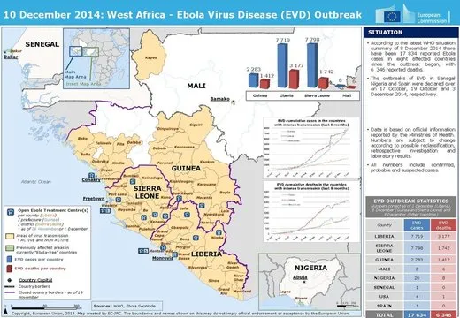
Un nou caz de Ebola apare în zona controlată de rebelii M23, la două luni după ce aceștia declaraseră focarul încheiat pe teritoriul lor
Coordonatorul răspunsului anti-Ebola al M23, Freddy Kaniki, a confirmat pe 3-4 septembrie 2026 un nou caz cu virusul Bundibugyo în teritoriul Lubero, Kivu de…
Chile și Argentina, dispută diplomatică pe Strâmtoarea Magellan — Milei și Kast reafirmă suveranitatea chiliană, dar decretul din 2021 rămâne neabrogat oficial
După ce un general al Forțelor Aeriene argentiniene a vorbit, într-un podcast, despre „suveranitate” argentiniană asupra Strâmtorii Magellan, Chile a…
Peru rupe relațiile diplomatice cu Iranul, invocând Strâmtoarea Hormuz și reprimarea internă — Teheranul nu a răspuns public
Prin comunicatul oficial 014-26, guvernul peruan a anunțat pe 1 septembrie 2026 ruperea relațiilor diplomatice cu Iranul, acuzându-l de restricționarea…
Germania: AfD termină pe primul loc în Saxonia-Anhalt, potrivit exit poll-urilor — prima victorie a extremei drepte la nivel de land din 1945
Potrivit exit poll-ului Infratest dimap difuzat de ARD duminică, 6 septembrie 2026, partidul de extremă dreapta Alternativa pentru Germania (AfD) a obținut…

CNA a descins la Protecția Consumatorilor: doi funcționari și doi agenți economici, cercetați pentru corupere — bani pretinși ca să nu se facă controale
Pe 2 septembrie 2026, ofițeri ai Centrului Național Anticorupție și procurori ai Procuraturii Anticorupție au efectuat percheziții la Inspectoratul de Stat…
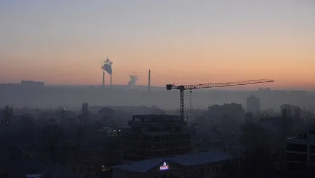
Șomajul în Moldova a „scăzut” de la 10,4% la 7,3% într-un trimestru — parte din cifră vine dintr-o schimbare de metodologie, nu doar din piața muncii
Biroul Național de Statistică a raportat, pe 3 septembrie 2026, o rată a șomajului de 7,3% în trimestrul al II-lea din 2026, în scădere cu 3,1 puncte…
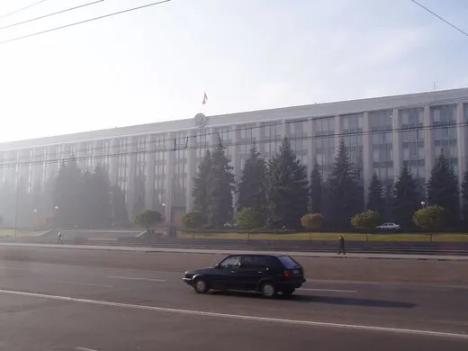
Guvernul de la Chișinău a vrut să majoreze TVA la absorbante de la 8% la 20% — și a renunțat în mai puțin de 48 de ore, după val de critici
Proiectul politicii fiscal-bugetare pentru 2027, prezentat pe 6 august 2026, scotea produsele de igienă feminină, prezervativele și mănușile medicale din…
Japonia pregătește funeralii mult mai reduse pentru fostul împărat Akihito, la cererea sa explicită
🌍 Agenția Casei Imperiale a Japoniei ia în calcul o ceremonie funerară mult mai restrânsă pentru fostul împărat Akihito, în vârstă de 92 de ani (93 în…
Racheta germană Spectrum a ajuns pe orbită — prima lansare orbitală privată de pe teritoriul continental european
Racheta Spectrum a companiei germane Isar Aerospace a decolat sâmbătă, 5 septembrie 2026, ora 22:12 GMT, de la baza Andøya din nordul Norvegiei, și a plasat…
Zece zile mai târziu: bilanțul chinez la Gyirong urcă la 31 de morți, dar Nepalul a trecut deja de 1.287 — raportul dintre morți și dispăruți rămâne la fel de dezechilibrat
📡 Zece zile după colapsul glaciar de la granița Nepal-Tibet, agenția de stat chineză Xinhua a ridicat din nou bilanțul oficial pe partea chineză a…
Sistemul de apă din Gaza s-a prăbușit aproape complet — OMS avertizează asupra unui dezastru sanitar înaintea sezonului ploios
Rapoarte publicate pe 1 și 4-5 septembrie 2026 de OMS, UNICEF și Medici Fără Frontiere (MSF) arată o prăbușire aproape totală a sistemului de apă și…
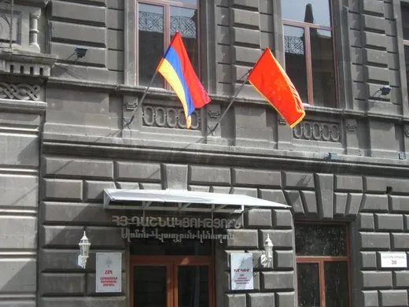
SUA scufundă sau imobilizează trei petroliere iraniene, după ce Garda Revoluționară a tras rachete spre un portavion american
Sâmbătă, 5 septembrie 2026, Comandamentul Central al SUA (CENTCOM) susține că Garda Revoluționară iraniană (IRGC) a lansat rachete balistice spre un…
Coreea de Sud: remanierea guvernului nu oprește căderea popularității lui Lee Jae-myung, la minim istoric
Președintele sud-coreean Lee Jae-myung a remaniat șase miniștri pe 31 august 2026, printre care responsabilii cu politica imobiliară, subiectul cel mai…
SUA: raportul de angajări din august arată nevoie de dobândă mai mare, chiar când Trump cere una mai mică
Biroul de Statistică a Muncii (BLS) a raportat, pe 4 septembrie 2026, 162.000 de locuri de muncă noi în august — de trei ori peste estimarea analiștilor —…
Un studiu chinezesc spune că șofatul agresiv ar putea uza bateria de peste 2,5 ori mai repede — dar cifra e o prognoză a unui model, nu o măsurătoare
Trei cercetători de la Universitatea Shanghai Dianji au construit un model care încearcă să separe efectul stilului de condus de restul cauzelor care…
Chiveri: buletinele de vot pentru Transnistria ar putea ajunge din Rusia prin poșta diplomatică — „deocamdată, putem doar să ne revoltăm”
Viceprim-ministrul pentru reintegrare, Valeriu Chiveri, a recunoscut pe 4 septembrie 2026 că R. Moldova are pârghii limitate pentru a opri Rusia să deschidă…
Un studiu de la Cambridge: parlamentarii britanici cred că publicul se opune politicilor de mediu de trei ori mai mult decât o face. Și tac din cauza asta
O sută de parlamentari britanici în funcție au fost întrebați cât de mult cred că se opune publicul unor măsuri de mediu. Au greșit constant, în aceeași…

România are, pentru prima dată, o hartă națională a locurilor unde cad pietrele. 1.500 km² cu risc ridicat, aproape toți în Carpați
Cercetători de la Universitatea din București, de la Universitatea „Alexandru Ioan Cuza” din Iași și de la Institutul de Geografie al Academiei Române au…
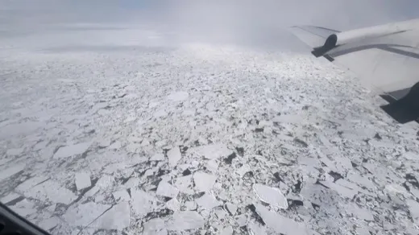
Sub gheața Arcticii e o orchestră: balene, gheață care crapă și motoare de cargobot. Un laborator MIT a ascultat-o și a trimis date prin gheață cu magneți
Cercetători de la MIT Lincoln Laboratory au dus senzori pe banchiza din Oceanul Arctic ca să înregistreze ce se aude dedesubt — cântece de balenă beluga…

Un model de la Cornell dă democraților 8 șanse din 10 să ia Camera Reprezentanților. A nimerit ultimele 14 alegeri
Politologi de la Universitatea Cornell au prezentat pe 3 septembrie 2026, la conferința anuală a Asociației Americane de Științe Politice de la Boston, o…
Procurorul general al Braziliei cere anularea unei anchete care îl citează pe judecătorul Curții Supreme Moraes — și pe el însuși
Procurorul general al Braziliei, Paulo Gonet, a cerut pe 1 septembrie 2026 Curții Supreme (STF) să anuleze un raport al Poliției Federale care conține mesaje…

Uber își încetează activitatea în Nigeria și Uganda — compania nu menționează inflația sau moneda drept motiv, deși presa locală le vede drept cauza reală
Uber a anunțat pe 2 septembrie 2026 că își încetează operațiunile din Nigeria și Uganda, după 12, respectiv 10 ani de activitate, în cadrul unei…

Curtea Supremă din Missouri blochează harta electorală cerută de Trump și trimite decizia la referendum pe 3 noiembrie
Curtea Supremă a statului Missouri a decis, pe 3 septembrie 2026, că noua hartă a circumscripțiilor congresuale — redesenată în 2025 de legislativul…

O simulare americană cu Rusia lovind Moldova și România a dat un răspuns călduț al SUA. Ignatius: Articolul 5 e „aproape literă moartă”
Luni, 31 august 2026, un exercițiu de tip „war game” organizat de Brooks Institute al Universității Cornell împreună cu Fundația Rockefeller a pus membri în…
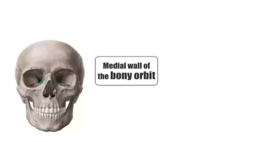
Cercetătorii de la Washington University au descoperit structuri imunitare, asemănătoare ganglionilor limfatici, ascunse în măduva osoasă a craniului
Un studiu condus de Jonathan Kipnis și Jang Hyun Park la Washington University School of Medicine din St. Louis, publicat pe 19 august 2026 în Nature, arată…

Fizicieni de la Carnegie Mellon găsesc o formă a efectului Hall care nu ar trebui să existe, potrivit teoriei clasice
O echipă de fizicieni de la Carnegie Mellon University, coordonată de Simranjeet Singh și Jyoti Katoch, a publicat în Nature Materials un rezultat care…

Cercetători australieni: rocile de fier din Pilbara pot genera hidrogen natural, iar procesul poate fi stimulat artificial
Un studiu al Edith Cowan University (ECU), publicat pe 12 august 2026 în International Journal of Hydrogen Energy, arată în laborator că magnetita —…

Un studiu pe șoareci: semaglutida administrată la bătrânețe le-a prelungit viața și le-a încetinit îmbătrânirea
Un studiu condus de laboratorul Danica Chen de la UC Berkeley, publicat pe 2 septembrie 2026 în Nature, arată că șoarecii femele bătrâne tratate 3 luni cu…

Taifunul Saudel: dig rupt lângă Putian și alunecare de teren în Jiangxi — bilanț de un mort și 11 dispăruți, plus sute de case surpate în Fujian
Taifunul Saudel a atins uscatul a treia oară în China, în dimineața de 3 septembrie 2026, pe coasta provinciei Fujian, după ce lovise deja de trei ori orașul…
Curtea de la Haga: India nu avea dreptul să suspende unilateral Tratatul Apelor Indus cu Pakistanul — New Delhi respinge decizia ca „ilegal constituită”
Curtea Permanentă de Arbitraj de la Haga a decis, în unanimitate, pe 1 septembrie 2026, că Tratatul Apelor Indus din 1960 „rămâne pe deplin în vigoare” și că…
Armata iraniană susține că a lovit baze americane în Kuwait și Emiratele Arabe Unite — un oficial american spune că atacurile „nu au afectat” nicio instalație militară a SUA
În noaptea de 2 spre 3 septembrie 2026, Artesh (armata regulată iraniană) a anunțat că a lovit cu rachete și drone baza Ahmad al-Jaber din Kuwait și baza Al…
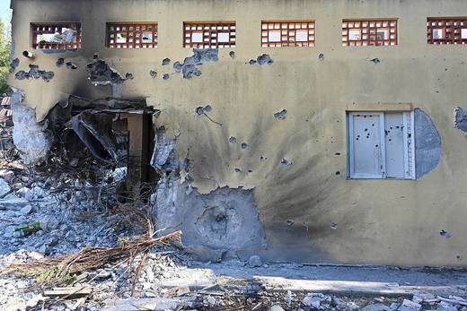
Israel eliberează cinci civili libanezi, în schimbul căutării de către Beirut a rămășițelor unor evrei libanezi dispăruți în anii '80
🌍 Israel a eliberat, pe 3 și 4 septembrie 2026, cinci civili libanezi aflați în detenție, prin mediere a Comitetului Internațional al Crucii Roșii (ICRC) —…
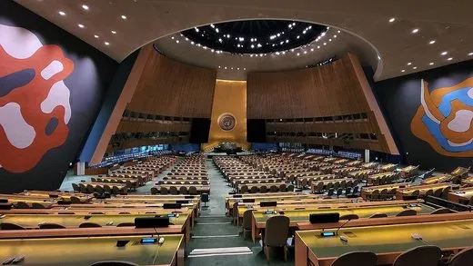
De ce s-a abținut Moldova la ONU de la rezoluția „harta corectă a lumii”: MAE a explicat abia după ce alte guverne au tăcut pe această temă
Adunarea Generală a ONU a adoptat pe 4 septembrie 2026, cu 164 de voturi pentru și unul împotrivă (SUA), rezoluția „Correct the Map”, care încurajează…
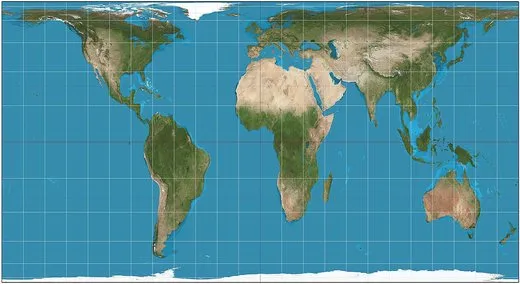
ONU adoptă o rezoluție pentru harta „Equal Earth”, care arată Africa la mărimea ei reală — SUA, singurul vot împotrivă
🌍 Adunarea Generală a ONU a votat vineri, 4 septembrie 2026, cu 164 la 1 (6 abțineri), o rezoluție nelegiferantă care încurajează statele, școlile și…
Un roi de drone al ELN ucide trei militari colombieni la Ocaña, lângă granița cu Venezuela — președintele De la Espriella promite „toată forța legitimă a statului”
🌍 Frontul Camilo Torres Restrepo al Ejército de Liberación Nacional (ELN) a atacat, vineri seara, 4 septembrie 2026, batalionul de infanterie „General…
Gazul pentru Transnistria e asigurat până la finalul lui 2026 — pentru 2027, vicepremierul Chiveri spune că „ne vine greu să anticipăm”
Vicepremierul pentru reintegrare, Oleg Chiveri, a declarat pe 4 septembrie 2026 că livrările de gaz pentru regiunea transnistreană sunt asigurate doar până…
Inflația din zona euro a urcat la 3,3% în august, cel mai mare avans din ultimii trei ani — dar aproape tot saltul vine din energie
Estimarea flash a Eurostat, publicată pe 1 septembrie 2026, arată inflația anuală a zonei euro la 3,3% în august, de la 2,9% în iulie — cel mai ridicat nivel…

Comisia Europeană cere clarificări oficiale despre „amendamentul Fritz” din Legea Integrității — România are două săptămâni să răspundă
Directoarea generală DG JUST a Comisiei Europene, Ana Gallego, a trimis pe 1 septembrie 2026 o scrisoare oficială către Reprezentanța României la UE, cu…

Parlamentul de la Chișinău a votat în primă lectură rectificarea bugetului: plăți unice de până la 4.000 de lei pentru bugetari
Pe 4 septembrie, Parlamentul a aprobat în primă lectură rectificarea bugetului de stat pe 2026 — aceeași rectificare despre care președintele Legislativului…
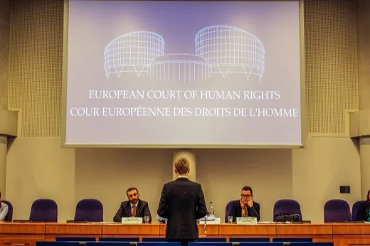
R. Moldova recunoaște, în premieră la CEDO, eșecul unei anchete de viol: femeia a așteptat 15 luni să înceapă ancheta
O femeie a depus plângere de viol, dar procuratura a refuzat de două ori pornirea urmăririi penale; judecătorul de instrucție a anulat ambele refuzuri, iar…
Agenția Proprietății Publice propune lichidarea a șapte întreprinderi de stat inactive, printre ele două studiouri de cinema și o revistă
Agenția Proprietății Publice (APP) a lansat, pe 28 august, consultări publice — deschise până pe 14 septembrie — pentru un proiect de hotărâre de Guvern care…

O femeie cu ordin de protecție și brățară electronică pe agresor a fost ucisă la Măgdăcești. Directorul Probațiunii a demisionat, protest la MAI
O femeie de 42 de ani din Măgdăcești (raionul Criuleni) a fost ucisă de soțul ei pe 31 august 2026, deși obținuse două ordine de protecție, iar agresorul…
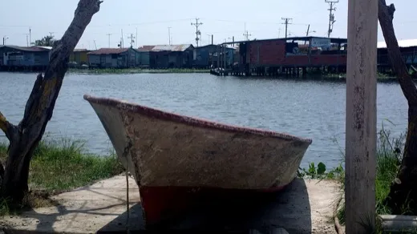
O lună după valul de migranți din Ceuta, zeci de mii de spanioli protestează în peste 200 de orașe și cer demisia lui Pedro Sánchez
🌍 Pe 2 septembrie 2026, de Ziua Ceuta, zeci de mii de spanioli au ieșit în stradă în peste 200 de localități — circa 50.000 doar la Madrid — la o lună după…

Comisia juridică a Camerei, chemată în plină vacanță parlamentară ca să nu „scape” tacit 10 proiecte USR de justiție — și le respinge
Comisia juridică a Camerei Deputaților s-a întrunit special în vacanța parlamentară, pe 28 august 2026, ca să respingă, înainte de termenul de adoptare…
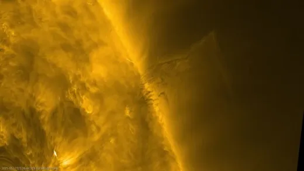
Telescopul solar Inouye a surprins pentru prima dată vârtejuri minuscule de plasmă pe suprafața Soarelui
Un studiu publicat în Nature pe 5 august 2026 descrie prima observație directă a unor vârtejuri minuscule de plasmă la suprafața Soarelui — unele de doar 20…

Psilocibina a prevenit leziunile nervoase provocate de chimioterapie, într-un studiu pe șoareci
Un studiu publicat în revista Science pe 3 septembrie 2026, realizat la MD Anderson Cancer Center, arată că două doze de psilocibină administrate înainte de…
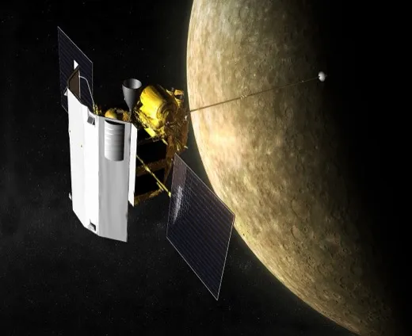
Misiunea BepiColombo a intrat în faza de sosire la Mercur, după opt ani de călătorie
Pe 3 septembrie 2026, modulul de transfer al misiunii europeano-japoneze BepiColombo s-a separat de cei doi orbitatori științifici, la peste 200 de milioane…
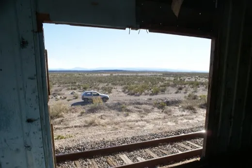
Interiorul lui Marte are o anomalie termică uriașă: emisfera sudică e cu 200-400°C mai caldă și parțial topită
Un studiu publicat în Nature pe 27 august 2026 arată că interiorul emisferei sudice a lui Marte e cu 200-400°C mai fierbinte decât cel al emisferei nordice…